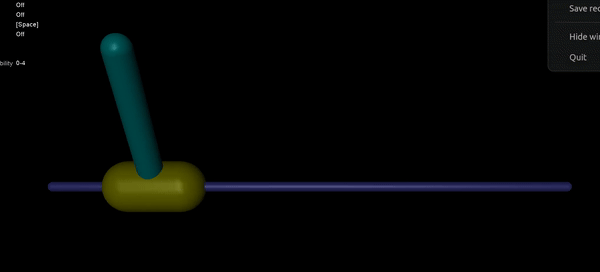

Model-Free Solutions using RL
Bachelor thesis work on model-free reinforcement learning solutions for classical control problems, including LQR, with application to civil engineering.

Introduction
As part of my thesis, I did extensive research into reinforcement learning techniques for tackling classical control problems such as cartpole balancing and LQR-style systems, developing model-free solutions to stabilize unstable systems without any knowledge of their underlying dynamics. For a general discrete-time system of the form x(k+1) = Ax(k) + Bu(k), y(k) = Cu(k), the goal is to define and learn control policies without ever knowing A, B, or C, using RL techniques ranging from traditional value iteration and policy iteration to actor-critic methods like REINFORCE, alongside additional formulations proposed from literature review that extend or modify existing algorithms.
Literature Review
Reviewed Model Learning Actor-Critic (MLAC), which integrates local linear models of system dynamics into the actor-critic framework to improve sample efficiency over purely model-free methods, while noting its sensitivity to model bias and hyperparameter tuning.
Cartpole Problem
Developed an optimal control policy for the cartpole balancing problem using the REINFORCE algorithm with a neural-network policy and value function, learning to apply corrective forces to keep the pole upright without access to the system's dynamics matrices. The learned policy was benchmarked against the ideal LQR solution obtained via the Algebraic Riccati Equation, converging to closely matching output, control-action, and cost behavior after sufficient training episodes. Full implementation and demo available on GitHub, with training code in this Colab notebook.
Jack-up System using RL
Extended the same model-free framework to jack-up systems used for settlement control in offshore structures and temporary foundations, drawing a direct analogy to the cartpole problem: uniform settlement maps to a balanced cartpole, tilting settlement to a tilted cartpole, and differential settlement to a displaced, tilted cartpole. The state space captures platform tilt angle and differential settlement (and their rates), while the action space consists of incremental jack-height adjustments, with a reward function penalizing excessive tilt, uneven settlement, and control effort. To account for real-world variability, soil cohesion and moisture content are proposed as additional state variables or cost-function terms, letting the learned policy adapt to changing soil conditions without relying on an explicit system model. Exploratory implementation available in this Colab notebook.